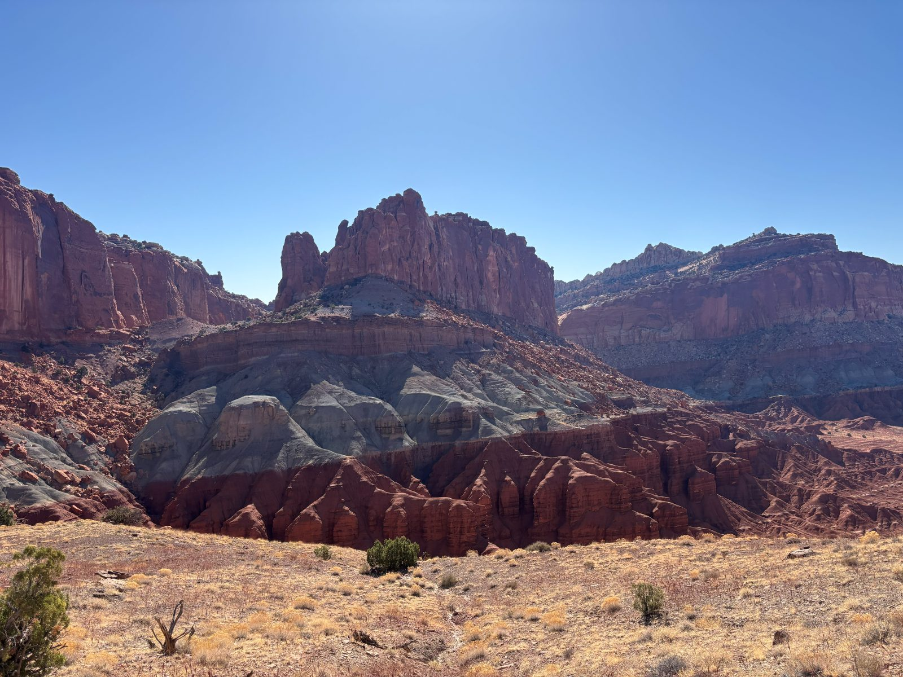
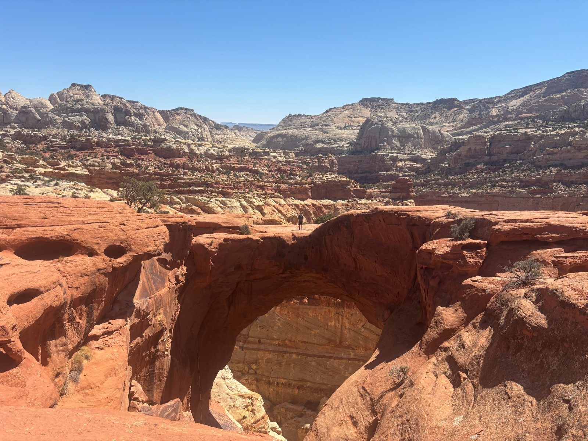
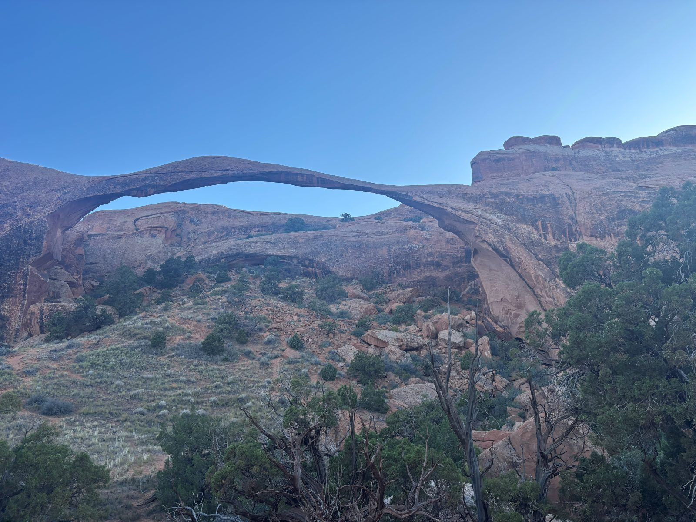
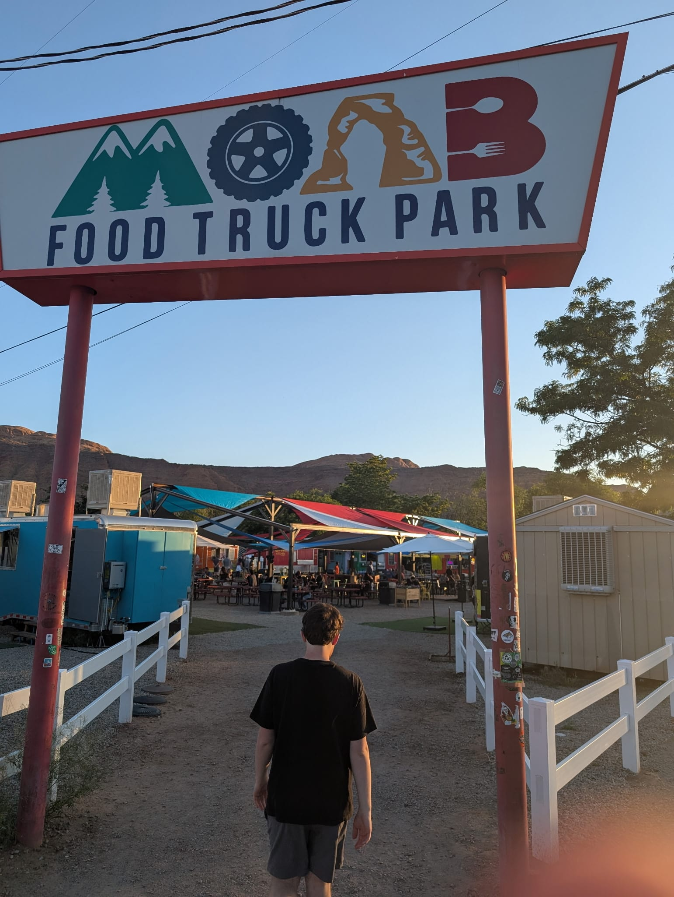
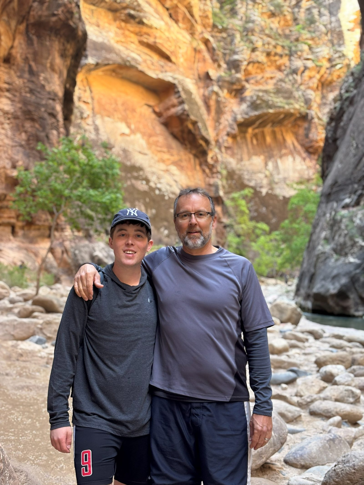
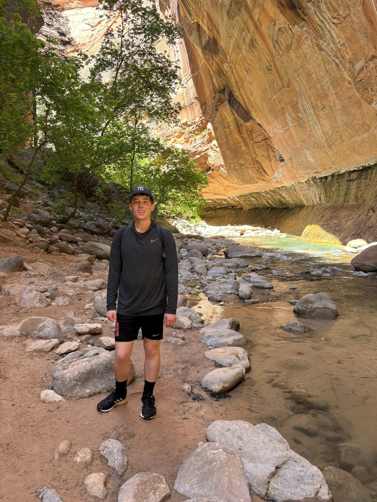

SOUTHWEST ROAD TRIP 2025
Day 1 - Monday (Travel)
- Flight from Midway to Vegas and then we got our rental car and got on the road
- Stopped for Jersey Mike's and groceries on the way
- Got into Torrey, UT and checked in before getting dinner at Chak Balam Mexican
- Good tacos and horchata
- Headed back to the cabin and prepped for Tuesday
Day 2 - Tuesday (Capitol Reef/Arches)
- Chimney Rock (3.6 miles)
- Started the hike at 8:45 after about a ten minute drive from the cabin

- Relaxing loop but wasn't exactly clear as to what Chimney Rock was
- View was also a bit hurt by the fact that the road is right there everywhere you look
- There was a spot to throw rocks and try to get them to stay up top which was fun
- Good trail but definitely not the coolest
- Cassidy Arch (3.1 miles)
- Parked by the trailhead for Cassidy Arch and Grand Wash trails and walked up to the arch

- Cool arch that you can walk over pretty easily
- People were climbing down from the top
- Flew through the way back and got on the road for the 17 minute drive to Hickman Bridge
- Hickman Bridge (1.8 miles)
- Short and easy walk out to a large arch
-
1 / 2
- There was another spot to try to get rocks to stay up top
- Started our 4.5 hour drive to Moab from here
- Ate at Duke's Slickrock Grill along the way in Hanksville
- Delicate Arch (3.2 miles)
- Busy trail, not too hard of a hike up to the arch
-
1 / 2
- Went super fast on the way back making sure we would have enough light to do Landscape Arch before it got too dark
- Landscape Arch (1.9 miles)
- Easy walk out towards a more delicate looking arch

- Looked a lot cooler than Delicate Arch which was recommended more than this
- Got dinner at the Moab Food truck Park

- Good schwarma wrap
- Got to the hotel and stayed in for the night
Day 3 - Wednesday (Moab)
- Slickrock Bike Trail (6-7 miles)
- Ate at Cactus Jack for breakfast and went to get our bikes at Double Down Bike Shop
- The guy there was super helpful and sent us on a trail that we didn't have to go very far for since we couldn't drive the e-bikes anywhere with our Hyundai Kona
- Started at 9:20 and climbed up a road to the trailhead where his wife was supposed to let us in for free but someone else was manning the booth and made us pay 5 each
- Got started on the trail and had to stop at almost every 20+ ft hill and walk up halfway because they were too steep to bike up
- We eventually got into more of a groove and rode pretty strongly until the fork where the loop started
-
1 / 3
- Recommended direction of travel was left which included a lot of super steep uphill and right was a bit more downhill for a while
- We went left until the zipline where the steep uphill started and turned back to the fork and ate lunch at 11:30 on top of a hill
- Started again towards the right side but didn't go as far since it went down pretty quickly and we didn't want to go all the way down and go right back up when we turned around
- Made it back to the fork again and did the left side again since it was really fun especially on the way back
- Headed back towards the trailhead and did the practice loop that we skipped on the way out
- Dad took a pretty hard fall on the way to the practice loop coming back up after a big downhill and banged up his knees and ankle
- We did the practice loop just once and headed back down the road to town
- Rode to The Spoke for a beer and veggies and hummus before dropping off the bikes
- Got on the road for our 4.5 hour drive to Antelope Canyon at 2:45
- Stopped halfway to pee and stretch off the side of the road
- Ate at Sunset 89
- Really good Asian-American fusion
- One of the best chicken sandwiches I've had
- Checked in, showered, and went to bed
- Ate at Cactus Jack for breakfast and went to get our bikes at Double Down Bike Shop
Day 4 - Thursday (Antelope Canyon)
- Lower Antelope Canyon (1 mile)
- Ate hotel breakfast and relaxed until 10:30 when we drove to Dixie's Antelope Canyon Tours
-
1 / 4
- Wyatt, our guide, walked us out to the descent to the canyon and told us about the history and how it was formed as we walked through the bottom of the canyon
- Did a neat demonstration after with a little pile of sand showing how the sandstone compacts and cracks to form the canyon
- We ate at Lale Powell Italian Deli
- Really good Italian paninis
- Horseshoe Bend (1.5 miles)
- Drove 10 minutes to the Horseshoe Bend trailhead
-
1 / 2
- Super popular and short hike out to Horseshoe bend and back
- Drove 2.5 hrs to Zion, checked in, relaxed for a bit, ate at Red Fort Indian Cuisine, cleaned up, and slept
Day 5 - Friday (Zion)
- The Narrows (7 miles)
- No breakfast at the hotel so we had Oscar's in Springdale like last year and picked up wraps from Sol Market again
- Got into the park but couldn't get parking so we parked in a spot that was sort of 20 minutes only but not explicitly
- Took the shuttle all the way up to Temple of Sinawava, walked a mile to the start of The Narrows, changed into water socks, and repacked bags before getting in the river


- Awesome hike, we took a little side stream until it was time to turn back
- Water didn't get higher than waist deep and that was only once but if the river was flowing stronger it might have been a swim
- Drove back to Vegas (3 hours) for the night and ate at Thai Street Cafe before dropping off the car and walking to our hotel
Day 6 - Saturday (Travel)
- Woke up at and took the hotel airport shuttle to the Vegas airport
- Got Mexican breakfast and this guy cut the line cuz he wasn't getting food and took like 5 minutes to check out with his $12 High Noon
- Took off a bit late and landed